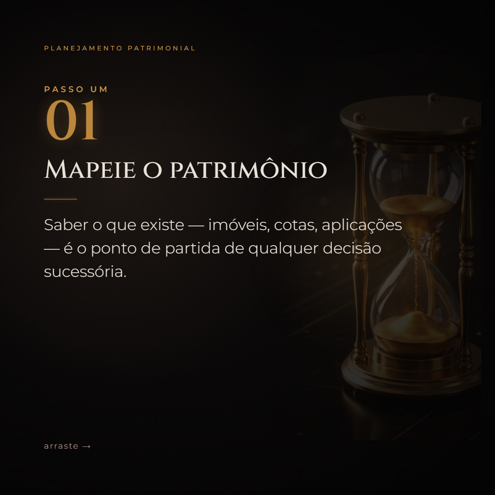
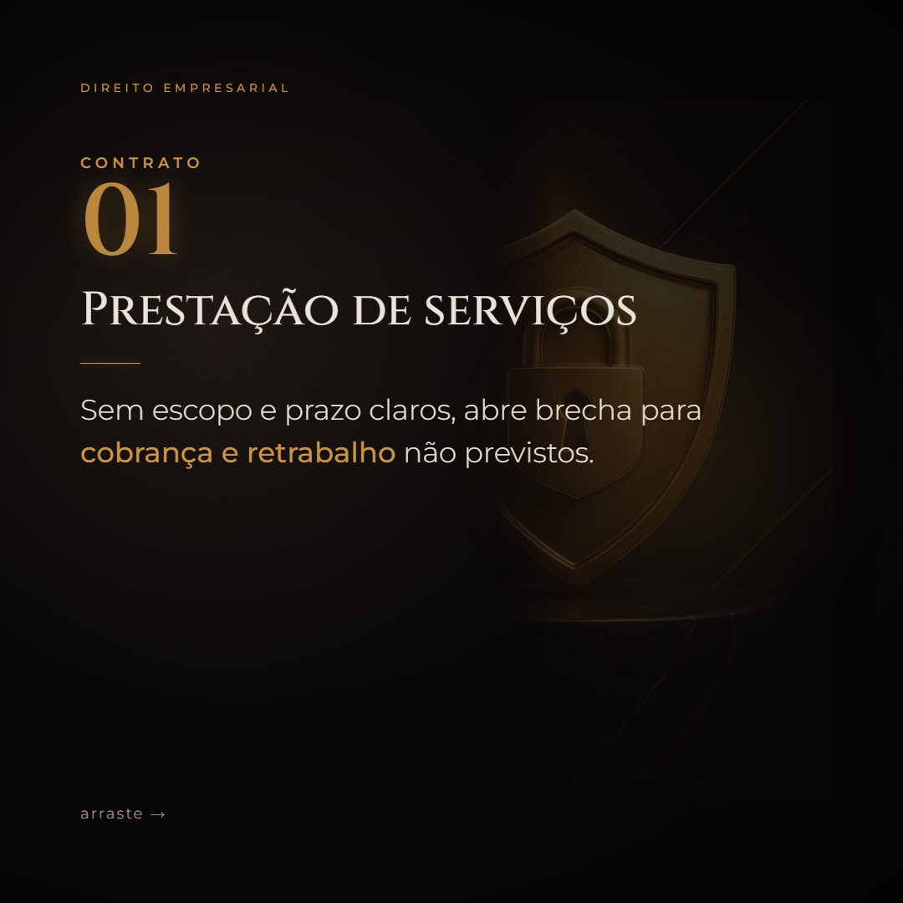
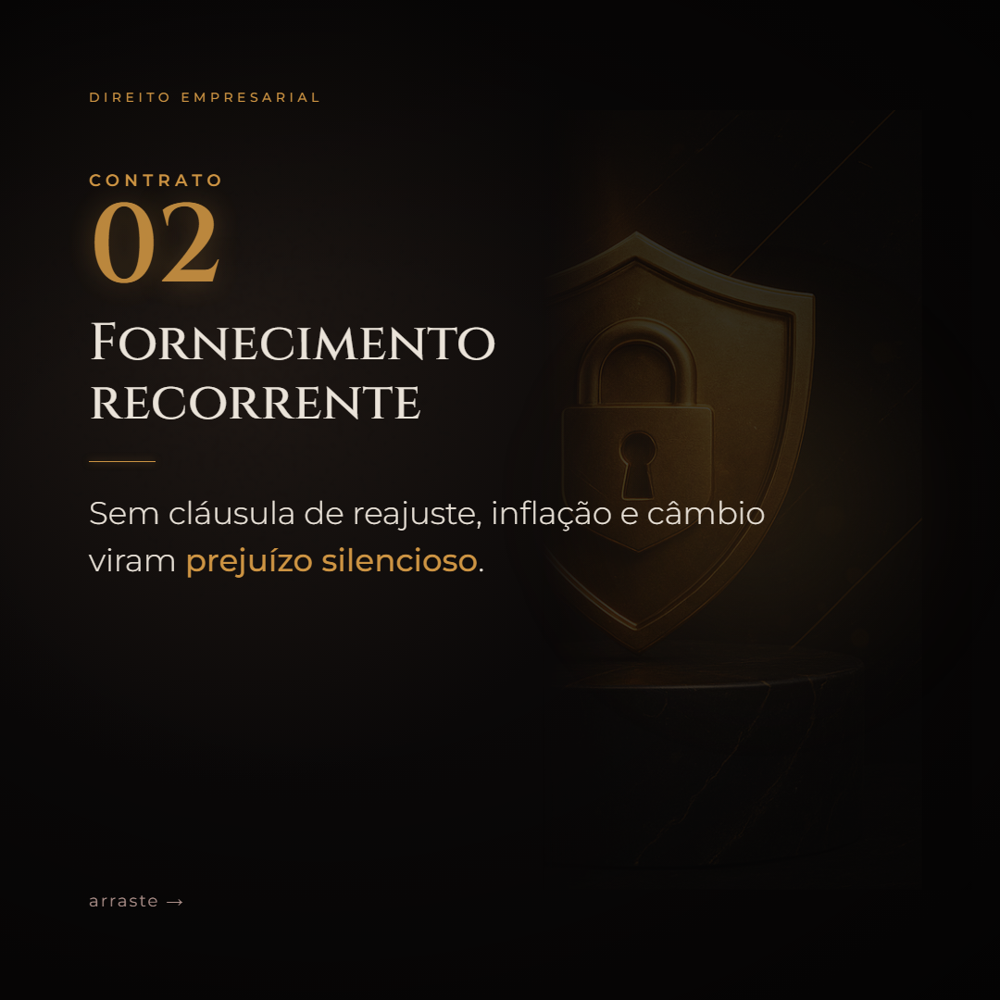

Dra. Aline, este é o próximo lote de conteúdo para o Instagram — 4 reels, 2 carrosséis e 2 posts, sobre temas atuais de Direito Empresarial e Patrimonial.
Toque nos vídeos para ouvir o som e deslize os carrosséis.
Empresa sem bens já não significa sócio pagando a conta. Para atingir o patrimônio pessoal é preciso provar abuso.
Nem toda família precisa de holding. Sem patrimônio relevante, vira custo fixo. Antes da estrutura, o diagnóstico.
O split payment: IBS e CBS recolhidos no momento do pagamento. Testes em 2026, regra plena até 2033.
Sem separação jurídica, a dívida da empresa alcança a casa, o carro e a reserva. Blindar é organizar antes.

A reforma do ITCMD já passou. O que dá para decidir ainda em 2026: mapear o patrimônio, avaliar doações com calma e revisar holding, testamento e regime de bens.


O contrato que mais processa não é o social — é o do dia a dia: prestação de serviços sem escopo, fornecimento sem reajuste e distrato no boca a boca.
Dividir a doação em vários anos para pagar menos imposto deixou de funcionar: a LC 227/2026 passou a somar as doações ao mesmo donatário.
Quando marido e mulher são sócios, o regime de bens decide quem responde pelas dívidas e o destino da empresa em um divórcio ou na sucessão.